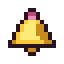
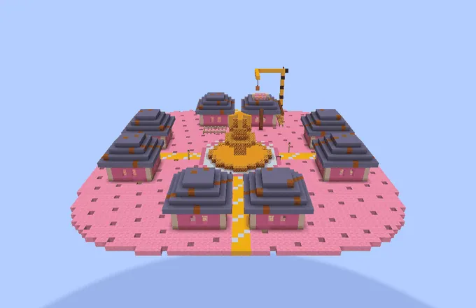

Guhdorpelingen met guhberoepen: handelen!
Guh villagesGuhdorpen
In the flat and rolling Guhmension biomes you'll find guh villages: hamster houses with cheese roofs around a plaza with a kaas saus fountain and a bell. They work just like normal villages (trading, beds, babies, iron golems), but the villagers are guh villagers: pink fur, round ears, big glossy guh eyes and a little tail. Villagers born in the Guhmension are always guh villagers.
In de vlakke en glooiende biomen van de Guhmensie vind je guhdorpen: hamsterhuisjes met kaasdaken rond een pleintje met een kaassausfontein en een bel. Ze werken net als gewone dorpen (handelen, bedden, baby's, ijzergolems), maar de dorpelingen zijn guhdorpelingen: roze vacht, ronde oortjes, grote glanzende guhogen en een staartje. Dorpelingen die in de Guhmensie geboren worden, zijn altijd guhdorpelingen.
Guh villagers only do guh jobs: they take their profession from these six job site blocks (they ignore lecterns, composters and the like). The knabbelboer (the guh farmer) has a field of kaasknabbel plants next to his house: plant kaasknabbel seeds on farmland and harvest 2–4 kaas knabbels when they're ripe.
Guhdorpelingen doen alleen guhbanen: ze krijgen hun beroep van deze zes werkplekken (lessenaars, composters en dergelijke negeren ze). De knabbelboer (de guhboer) heeft een veldje kaasknabbelplanten naast zijn huis: plant kaasknabbelzaadjes op akkergrond en oogst 2–4 kaasknabbels als ze rijp zijn.
LootBuit
| ItemVoorwerp | CountAantal | ChanceKans |
|---|---|---|
 Guh-belletje | 1 | 35% |
| 1–3 | 30% |
PicturesPlaatjes
